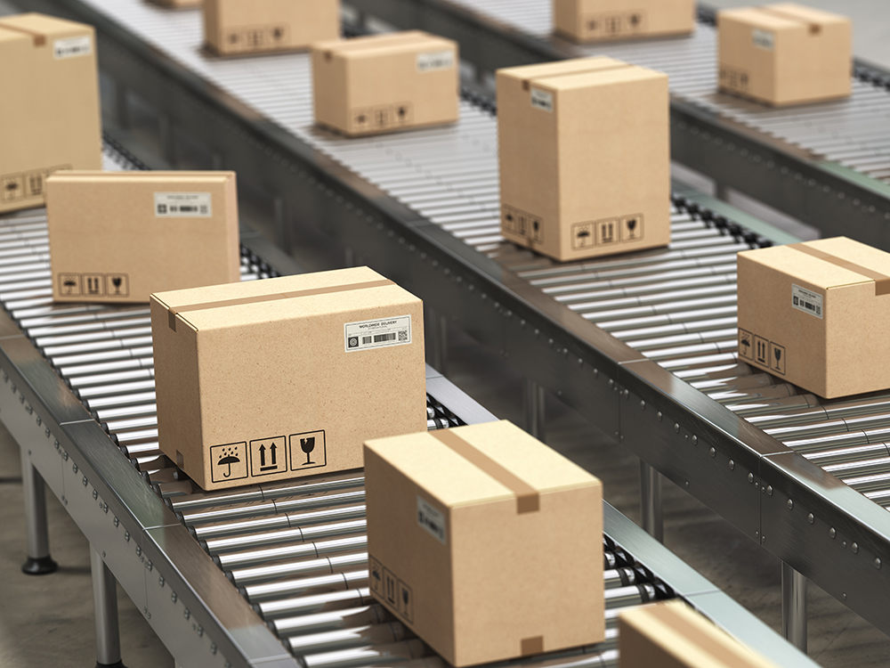
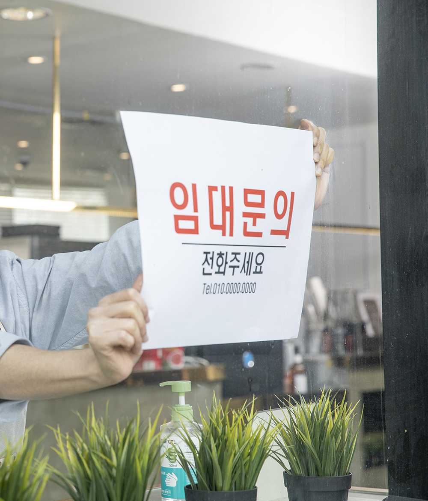
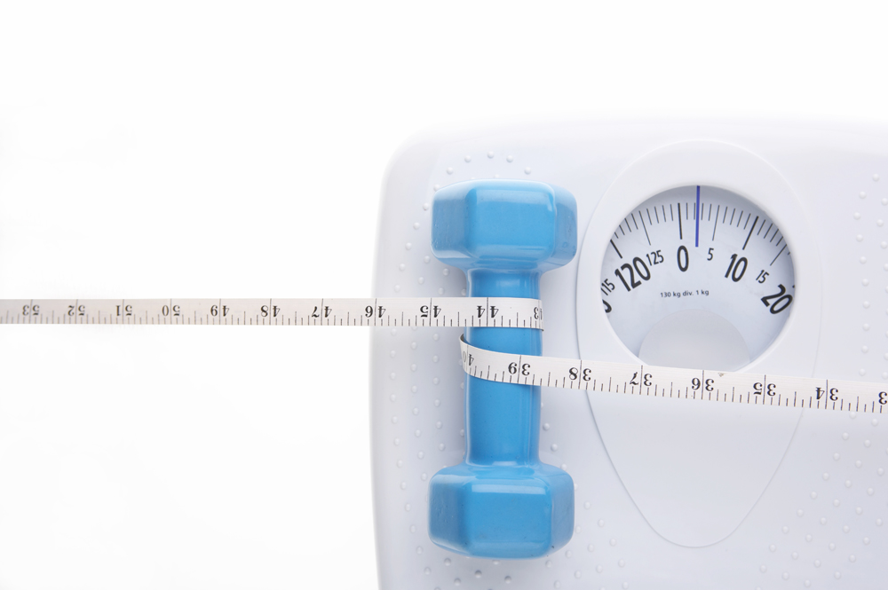

고용지원금
돌려받는 -
이지한 방법
브랜드 모델
김현욱
고용지원금
돌려받는 -
이지한 방법
브랜드 모델
김현욱
'몰라서 못 받은 내 돈'
평균 700만원!
지난 5년간 직원 채용한 적이 있다면,
지금 바로 고용지원금조회해보세요.
환급금 조회 기간
최근 5년
환급 조회 업체 수
28,684개
누적 환급 조회액
1,800억
스마트한
요즘 사장님들의
초간단
내 돈 찾기 이야기
핸드폰만 있으면 바로 조회됩니다.
현장에서 바쁘게 일하다 보니 고용지원금은 생각 못했는데요.
고돌이는 핸드폰만 있으면 바로 조회가 되다보니 좋았습니다.
그냥 조회하고 신청만 해도 환급금이 입금되는데 진즉 신경썼으면
6년 전 7년 전 금액까지 받을 수 있었을텐데 아쉽네요. ㅎㅎ
강*진님 / 건설업37,426,965원 환급
몰라서 놓친 환급액이 이렇게 많을 줄은 몰랐어요.
이런 지원금이 있는거면 홍보 좀 자주 해주지ㅠㅠ
몰라서 그간 다 놓친거 같아요..ㅠ
예상 환급액 확인하자마자 느낀 게
내가 여태 몰라서 놓쳤던 환급액이 이렇게나 많다고? 였어요!
지금이라도 고돌이 알게돼서 너무 다행인거 있죠?ㅠ
아직 조회 안해보셨으면 꼭 해보세요!!!
이*빈님 / 교육서비스업21,453,712원 환급예정
정말 환급이 됩니다!
불경기로 힘들었을 때 우연히 좋은 기회로 고돌이를 알게돼서 다행이었어요.
속는 셈 치고 조회해봤는데 환금액이 생각보다 많아서 사기인가 했는데 수수료가 환급 후 결제라 신청해봤거든요.
그런데 정말 환급이 되더라구요.
고민은 환급 일자만 늦출 뿐.. 저처럼 고민하다가 5년전꺼 놓치지 마시고
환급 받을 수 있을 때 빨리 받으세요!
구*상님 / 서비스업11,126,354원 환급
바쁠 때 신경 안써도 알아서 환급해줘요!
요즘 정말 정신없는 하루를 보내고 있는데요.
주변 분들한테 세금환급에 대해 종종 들었지만 어렵기도 하고
바쁘기도 해서 계속 미뤄왔는데 고돌이는 1분이면 예상환급금이 나오고
환급 신청도 인감증명 필요 없이 어렵지 않아요.
바쁘시더라도 한번쯤 조회해보세요.
정말 강추 합니다!
강*진님 / 물류업38,426,965원 환급

고돌이 덕분에 한시름 돌렸어요!☺
6년간 운영했던 가게를 정리했는데
폐업을 해도 돈 나갈 곳이 왜 이리 많은지..ㅠ
고돌이 덕분에 고용지원금이라는게 있다는 걸 알게 됐어요!
고용지원금은 폐업자도 받을 수 있으니까 예상환급금 꼭 확인해보세요!
덕분에 한시름 돌렸어요!☺
동*아님 / 요식업12,351,478원 환급

믿을 수 있는 고돌이, 깔끔해서 만족합니다.
처음에는 피싱이 아닐까 걱정했는데 벌써 많은 사업자분들이 환급을 받았더라고요. 사업을 하고 계신다면 환급금이 있는지 확인해보면 좋을 것 같습니다. 저도 반신반의하며 조회해보고 생각보다 큰 금액에 놀랐어요.
또 신기한 게 이렇게 조회된 금액을 그대로 돌려받을 수 있다는 거!
어려운 시기에 한숨 돌렸네요.
감사합니다!
㈜진한** / 생산·제조업29,854,400원 환급
정확한 예상 환급금, 매년 신청할 예정입니다.
예상 환급금이 정확하지 않을 수도 있겠다 싶었는데
고돌이의 예상 환급금은 정확해서 좋더군요.
환급 신청하는 것도 간편 인증으로 어렵지 않았고,
전문 회계사가 직접 경정청구를 진행해주니까 믿고 맡겼습니다.
더 받으면 더 받았지 예상 환급금보다 못 받는 경우는 없는 것 같던데
매년 신청해서 받아야겠습니다.
플레*** / 방송통신업8,545,380원 환급예정
생각치도 못한 꽁돈! 꼭 확인해보세요!
지원금이 있을거라는 건 생각도 못해봤는데
주변 사장님들과 재미삼아 확인했더니 웬일루 지원금이 ㅋㅋㅋ
생각치도 못한 꽁돈이라 너무 좋더라구요 ㅋㅋ
고마워요 고돌이:)
장*수님 / 체육시설업4,852,623원 환급
'세무조사, 추징'
걱정할 필요 없게
고돌이 환급은
BnH회계법인이 함께합니다.
“대기업 전담 회계사의 안전한 환급 서비스”
고돌이 환급은 S사, H사, L사 등
대기업 세무조사 경력이 있는 전문인력들의
면밀한 검토 과정을거쳐 진행됩니다.
대기업에서도 신용하는 BnH의 경정청구 서비스
지금 고돌이로 경험하세요.
“대규모 전문 인력의 정확한 환급 서비스”
고돌이 환급을 진행하는 BnH회계법인은
국세청, 변호사, 세무사, 회계사 출신 전문인력을
약 200명 보유하고 있습니다.
처음부터 정확한 금액을 안내드릴 수 있는 건
대규모 전문 인력을 보유한 BnH만의 장점입니다.
복잡한 서류 없이
카카오톡으로
1분만에 확인해보세요
1원도 놓치지 않도록
5년 동안의 환급금
한 번에 조회
SSL 인증
데이터 암호화로
철저한 개인정보 보호
세무대리인 변경 없는
안전한 환급
선입금/추가결제 없이
환급 확인 후
이용료 결제 진행
궁금해요 고돌이!
고돌이는 개인/법인 사업자를 위한 고용지원금 환급 신고 도움 서비스입니다.
고용지원금은 사업자를 위한 지원 혜택으로 고돌이에서는 5년간 받지 못한 고용지원금을 돌려받을 수 있도록 환급 프로그램과 제휴 회계법인의 크로스 체크를 통해 1원도 남김 없이 정확한 환급을 도와드리고 있습니다.
환급절차는 다음과 같습니다.
1. 카카오 인증을 통한 환급액 조회
2. 환급 신청
3. 제휴 회계사의 검토 및 신고서 접수
4. 관할 세무서의 환급금 입금
*환급금 입금에는 평균 1개월~최대 3개월이 소요됩니다.
아닙니다.
경정청구는 납세자의 정당한 권리로 세무 조사 대상과는 무관합니다.
세무조사 대상자 선정은 국세기본법 제81조 6에 규정된 사유에 따라 선정하며, 경정청구는 세무조사 대상자 선정 기준으로 규정되어 있지 않습니다.
고돌이의 환급금 조회 서비스는 무료로 운영되고 있습니다.
단, 조회 후 환급을 신청하여 환급을 받은 후에는 소정의 이용료가 발생합니다.
*서비스 이용료는 입금 희망 계좌에 환급금이 입금된 이후 별도 결제됩니다.
아닙니다.
고돌이 제휴 회계사는 관할세무서에 경정청구를 진행하는 업무만 담당하며 담당 세무사 및 홈택스 세무대리인은 변경되지 않으니 걱정하지 않으셔도 됩니다.
조회된 예상 환급금은 5년간의 고용지원금 환급 금액입니다.
단, 일정 기간이 지난 환급금은 소멸되니 서둘러 신청하시길 바랍니다.